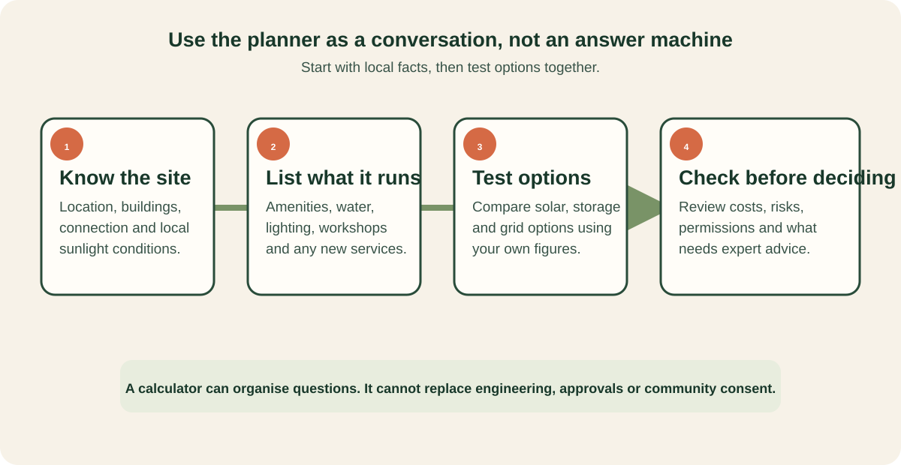

How to use the planner
Use the numbers to guide a structured conversation about a real site. Begin with what is known, write down assumptions that are uncertain, then ask qualified local advisers to check the work before a decision.

What a community site carries
A typical showground or reserve is a small, spread-out electricity customer: powered camp bays, showers and hot water in the amenities block, a kiosk or camp kitchen, laundry, an office and Wi-Fi, security and oval lighting, and water pumping. Individually modest; together they are often the site's largest operating cost after labour — and the load is strongly daytime-weighted, which is exactly what solar produces.
| Load | Typical draw | Notes |
|---|---|---|
| Hot water (amenities) | 3–5 kW heat pump per block | The biggest single amenity load; heat pumps cut it ~70% vs electric elements. |
| Powered bays | ~3–8 kWh/day each, occupied | Rigs charge batteries, run fridges, heaters and air-con — scales with occupancy. |
| Oval floodlights | 1–2 kW per tower, evenings | Heavy but intermittent — LED retrofits halve it. |
| EV charging | 7–22 kW AC per charger | New load, new revenue — but two 22 kW chargers can exceed a small site's supply. |
The planner — in the modelling lab
The planner is the first tab of the modelling workbench — Site planner → Financial model → Solar & battery → Water & thermal → Report. Choose the scenario that fits — an existing site upgrade, a resilience hub, a community microgrid, a digital cooperative, or a greenfield build from scratch — then set the location on the map, its loads, and the solar & storage build. For relevant scenarios, demographic inputs (regional population, people escaping domestic violence, rental stress, seasonal workforce, homelessness) produce a supported-accommodation duty line alongside the energy numbers.
The map searches any Australian location, switches to satellite imagery for individual-roof detail, and can scan nearby buildings from OpenStreetMap into 2D roof-segment estimates you then correct. A single Send site inputs to the models action pushes the array, battery and load split into the solar tab, potable demand into the water tab, and regional population into the financial model; Add this site build to the report files the run into the exportable PDF — build cost, annual savings, three income bands, payback and autonomy included.
Reading the numbers
What the solar math assumes
Each roof segment converts usable area into kilowatts-peak (~0.22 kW per m² of modern panels), then multiplies by the site's monthly peak sun hours, an orientation factor (north ≈ 100%, east/west ≈ 88%, south ≈ 65% at typical tilts), a pitch factor versus the site's latitude, and a system-losses figure covering temperature, wiring and inverter efficiency. It is a planning estimate — shading, roof condition and structural capacity all need a real inspection.
Getting real roof data
Two routes to exact segments: the Google Solar API (buildingInsights) returns per-segment area, azimuth and pitch for mapped buildings — good where coverage exists. The open route is to measure footprints on satellite imagery (OSM polygons, or draw over the roof) and take pitch from photos or a site visit — orientation can be read from the footprint's longest edge. The planner's building scan automates the footprint half of this; pitch still needs your eyes.
Estimates, not designs. Energy balances here are daily averages, not hour-by-hour dispatch; demand charges, three-phase limits, export limits and tariff structures need an electrical engineer and the network operator. Payback figures ignore financing, maintenance and revenue from bays and EV charging. The day/evening/overnight load split sent to the solar model is a heuristic (50/30/20 of non-24/7 load) — adjust it when real meter data exists.